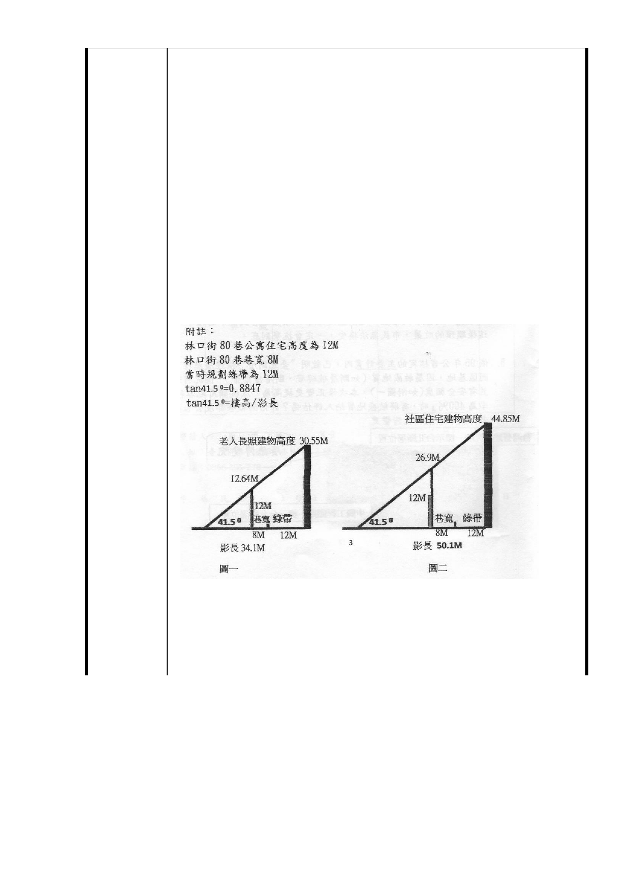

北向。
4.日照計算 以中央氣象局提供的資料，冬至中天仰角 41.50
時，角度最大，林口街 80 巷住戶受日照最多時來做檢討：
以廣慈園區伯德 BOT 的規劃設計為例（當時社福用地容積
率訂為 210％）
（1）老人長照建物高度為 30.55M，對面的林口街 80 巷公寓
，冬至中天受日照最多時被陰影籠罩的高度為 12.64 公尺
，公寓完全被陰影籠罩（如圖一）。
（2）社區住宅建物高度為 44.85M，對面的林口街 80 巷公寓
，冬至中天受日照最多時被陰影籠罩的高度為 26.9 公尺
，公寓完全被陰影籠罩（如圖二）。
最終社福用地容積率調高為 400％時，將來建築物必定會高
於 30.55M 或 44.85M 約 2 倍，屆時林口街 80 巷公寓非但冬
季處於黑暗中，連春秋兩季亦將不見天日。
（註一）：修訂「擬定臺北市信義區福德段二小段 319 地號等 11
筆土地社會福利設施用地、公園用地、商業區及道路
用地細部計畫」土地使用分區管制規定案（第一頁 壹
、計畫緣起 第二段）
- 21 -